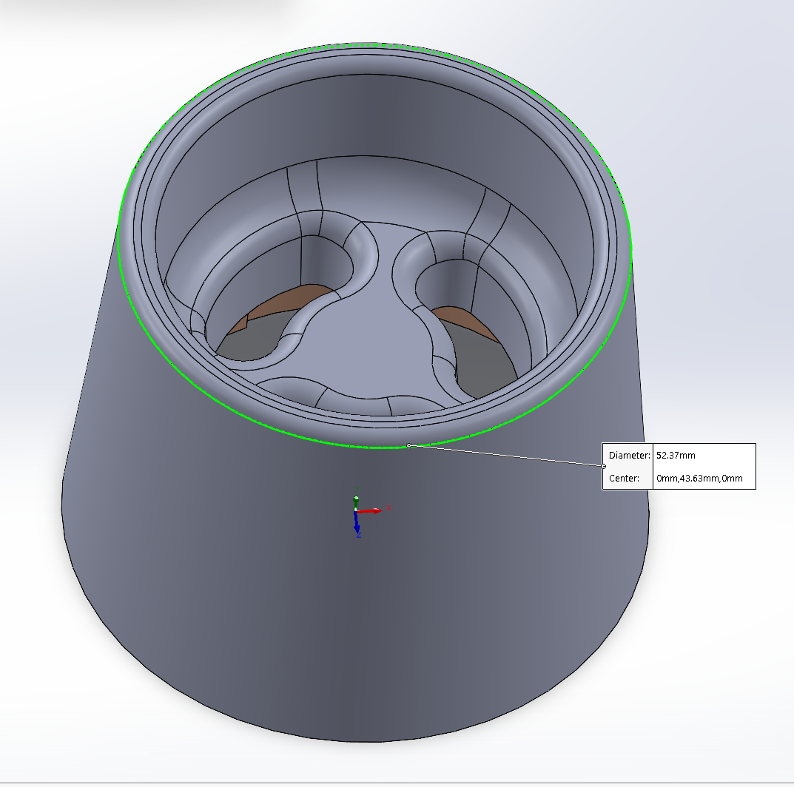
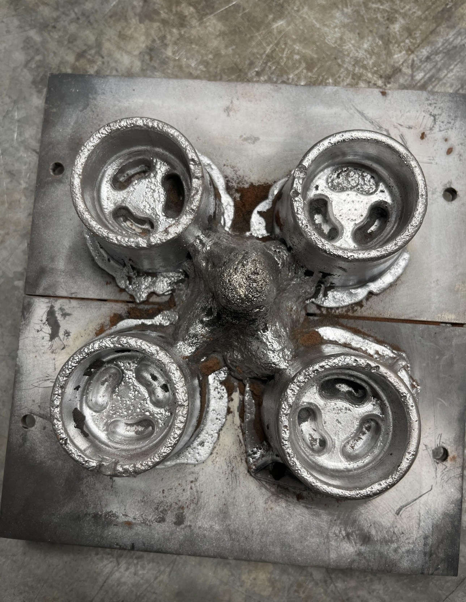
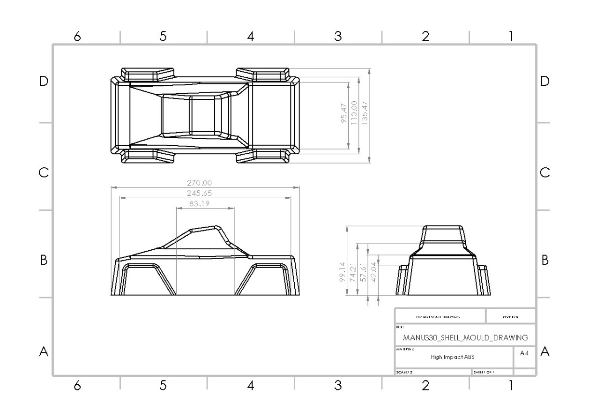
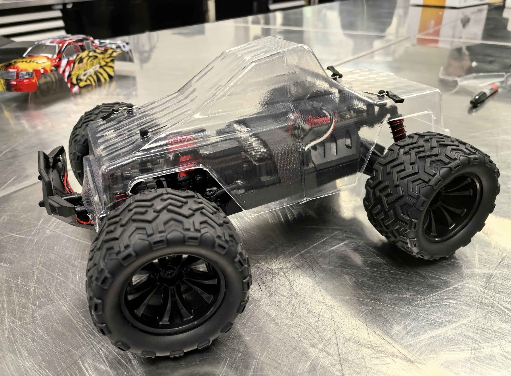
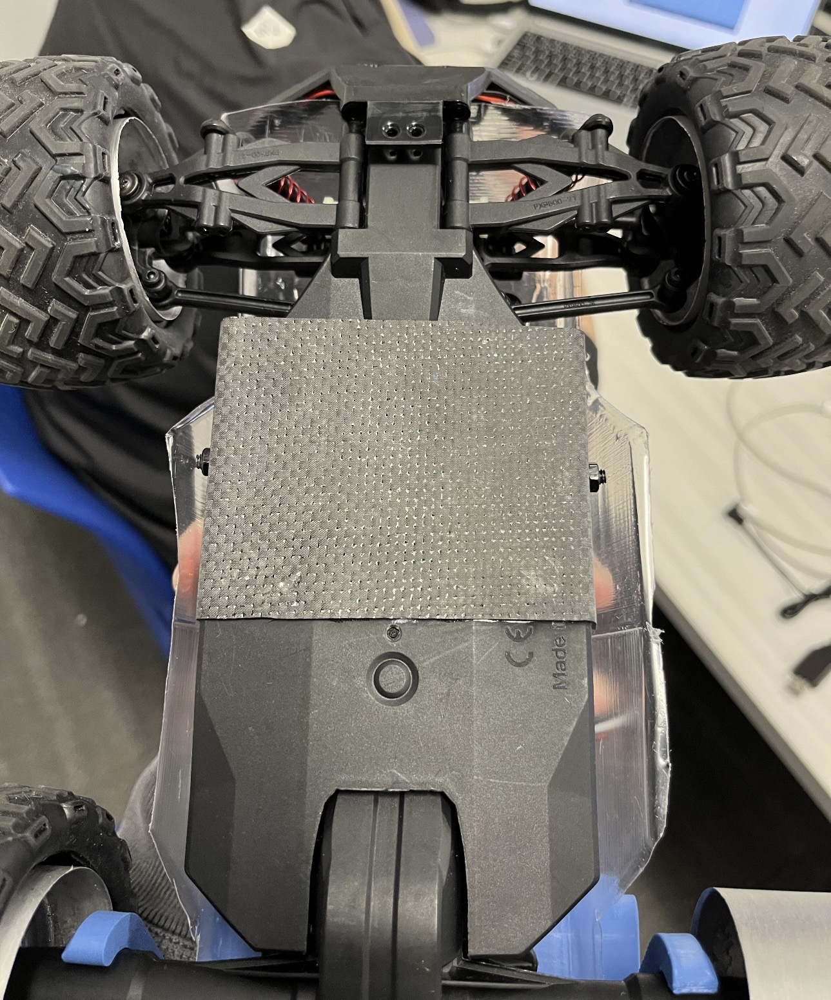
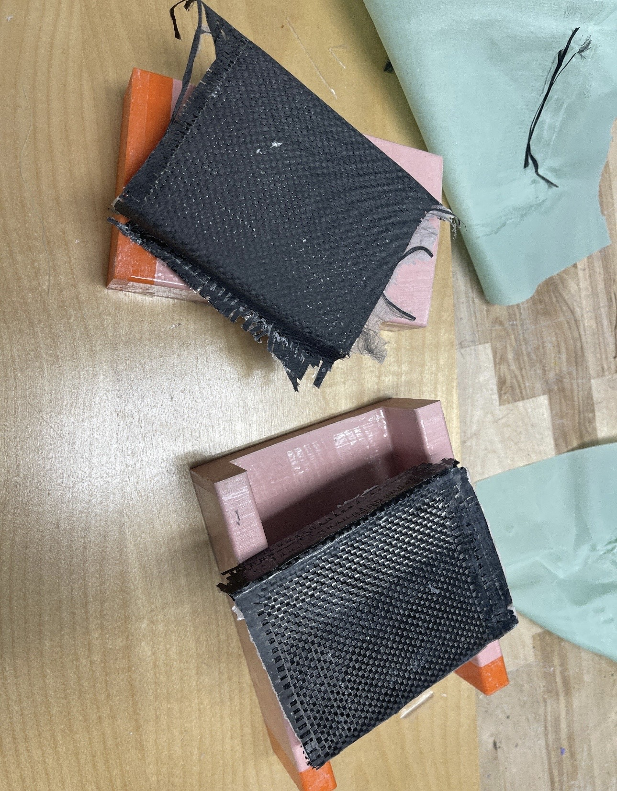
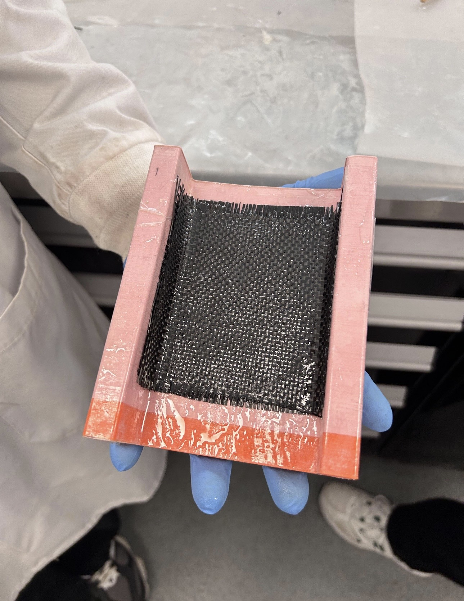
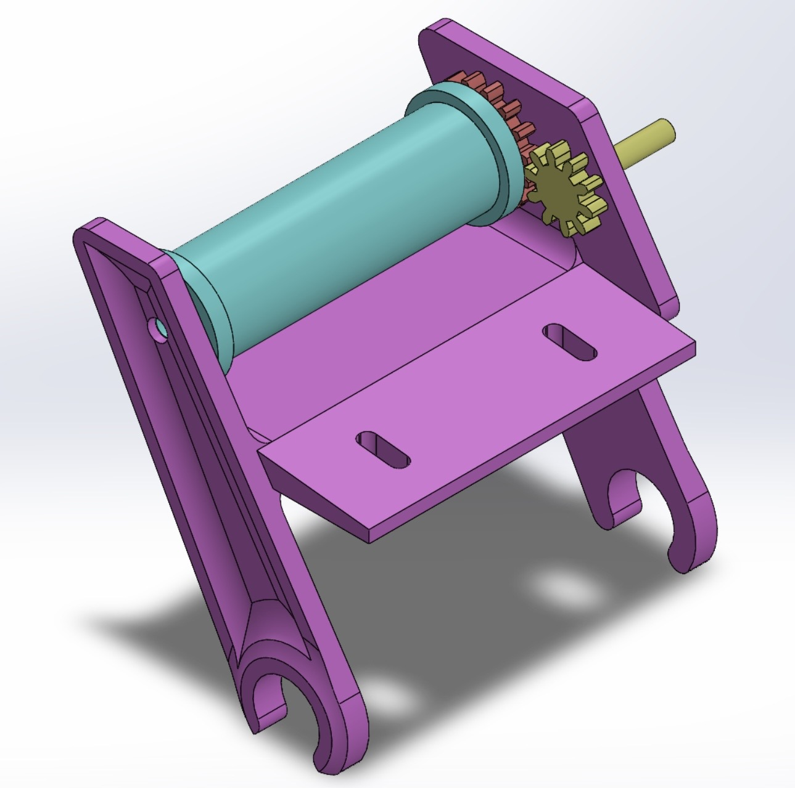
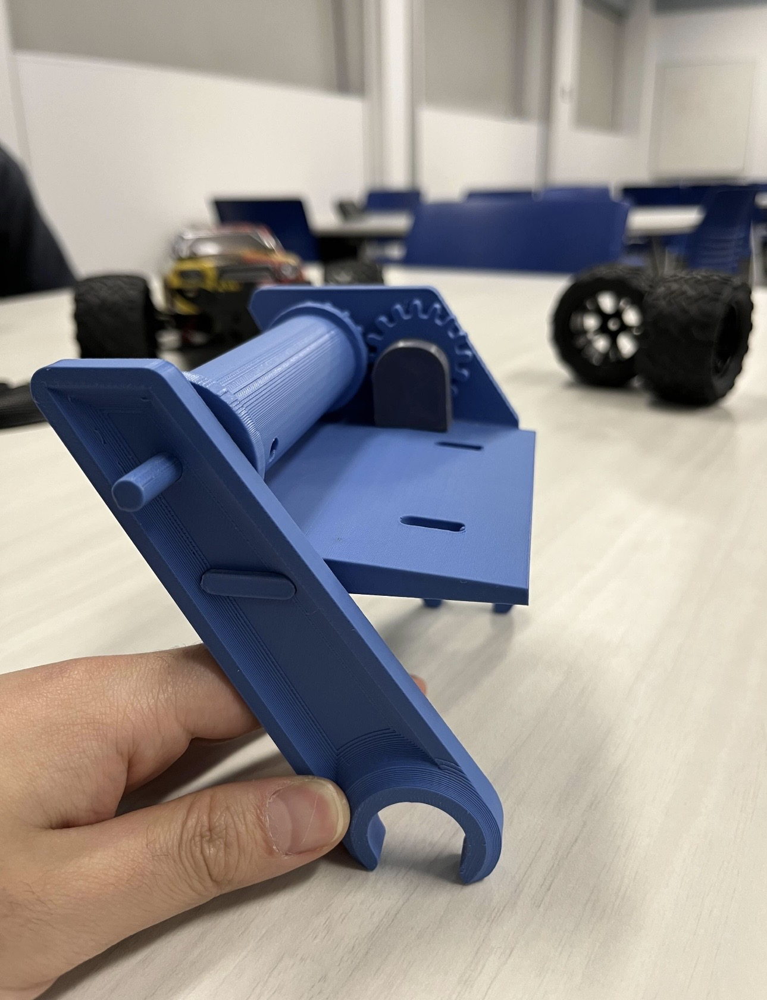

RC Car Redesign
Mechanical redesign spanning SolidWorks, FMEA, sand casting, thermoforming, and chassis modifications, Resin Transfer Molding.
Overview
This project started as a mechanical redesign of an existing RC car, but quickly became much broader. I worked across the wheels, body shell, chassis, and a rear winch system, then helped translate the redesigned vehicle into a realistic manufacturing plan through FMEA, factory layout, cycle-time analysis, and cost evaluation.
The goal was not simply to create new CAD geometry. Each design decision had to work physically, remain manufacturable with the processes available to us, integrate with the rest of the vehicle, and eventually fit into a repeatable production system.
Redesigning the Vehicle
I began with the wheels. The existing wheel design was reworked in SolidWorks with a focus on reducing unnecessary material while maintaining the required geometry, hub interface, and compatibility with the rest of the drivetrain.
Because the final wheels were going to be manufactured in aluminum through sand casting, the design could not be treated as a purely CAD exercise. The geometry had to make sense from a manufacturing perspective as well. Once the design was finalized, the wheels were taken through the casting process from mold preparation to the finished aluminum part.


In parallel, I worked on the exterior body shell. The shell had to fit over the redesigned vehicle while clearing the chassis, wheels, internal components, and additional hardware being added to the car. The geometry was developed around those packaging constraints and then prepared for thermoforming.
This meant accounting for how a heated plastic sheet would actually form over the mold rather than simply designing the final outer surface. The final shell was physically thermoformed and fitted to the vehicle, allowing the CAD geometry to be validated against the real chassis and component layout.


Rebuilding the Chassis
The larger packaging challenge came from the chassis. The existing chassis did not provide enough space for the revised vehicle configuration, so instead of designing around that limitation, we modified the structure itself.
We cut the original chassis and developed a new carbon-fiber chassis extension that increased the usable vehicle length while still integrating with the original structure. This required the extension to line up correctly with the existing chassis, maintain the intended wheel and shell geometry, and provide enough space for the additional subsystem being installed at the rear.
The extension was manufactured from carbon fiber and resin using an RTM-style composite process. The carbon-fiber structure was formed around the required geometry, resin was introduced into the laminate, and the assembly was held in a vacuum-bagged setup while curing.
This was one of the most useful parts of the project because the structural design could not be separated from the manufacturing process. The final cured geometry, attachment points, alignment with the original chassis, and fit beneath the thermoformed shell all had to work together.




Adding the Rear Winch
The vehicle also needed an additional functional subsystem, so we integrated a rear-mounted winch capable of providing a controlled pulling action.
Adding the winch created another mechanical packaging problem. It had to be positioned where it could operate effectively while still fitting within the extended chassis and remaining clear of the shell, wheels, and surrounding hardware.
The mounting location, supporting structure, and available rear space therefore became part of the chassis redesign. Rather than treating the winch as something that could simply be attached at the end, we considered it together with the vehicle structure and component layout during integration.


Using FMEA to Guide the Design
Throughout the redesign, I used Failure Mode and Effects Analysis to identify where the product or manufacturing process could fail before those issues appeared during final assembly.
We looked at the vehicle as a complete system rather than evaluating the wheels, shell, chassis, and winch independently. Potential problems included manufacturing difficulty, structural interfaces, subsystem interference, assembly errors, and failure of individual components.
The FMEA helped turn those risks into design decisions. Where a potential failure mode was identified, the geometry, manufacturing approach, interface, or assembly process could be reconsidered before committing to the final build.


From One Vehicle to a Production System
Once the redesigned vehicle was defined, the project shifted from how do we build this car? to how would we manufacture it repeatedly?
We created a complete factory layout covering the major manufacturing and assembly operations for the vehicle. The layout considered where each process would occur, how components would move between stations, how the different subsystems would come together, and how the final car would progress through the facility.
The production sequence had to account for very different manufacturing processes: sand casting for the wheels, thermoforming for the shell, composite manufacturing for the chassis extension, mechanical assembly for the vehicle, and installation of the winch and remaining components.
We then calculated cycle times for the individual subsystems and production stages. Comparing those times made it possible to see where one process could restrict the overall flow of the factory and where a bottleneck might develop.
Instead of evaluating each manufacturing operation in isolation, the cycle-time analysis allowed us to look at the system as a whole and determine whether the proposed production sequence was reasonably balanced.
Finally, we completed a full cost analysis covering the major materials, manufacturing processes, assembly requirements, and production resources associated with the car. This connected the physical design decisions back to the economics of producing the complete vehicle.
By this stage, a change to the car was no longer just a mechanical decision. Changing a component could affect its manufacturing method, cycle time, workstation requirements, material usage, and ultimately the cost of the final product.
Outcome
The final result was much more than a modified RC car. The wheels were redesigned in SolidWorks and manufactured through sand casting, the exterior shell was designed and thermoformed around the new vehicle package, the original chassis was cut and extended using a vacuum-cured carbon-fiber structure, and a rear winch system was integrated into the finished architecture.
The complete vehicle was then taken beyond prototype development through FMEA, factory-layout planning, subsystem cycle-time calculations, bottleneck analysis, and full cost evaluation.
The project gave me experience following a mechanical product through the full chain of CAD → FMEA → fabrication → subsystem integration → factory planning → cycle-time analysis → cost . It showed me how product design and manufacturing-system design have to evolve together rather than being treated as separate engineering problems.